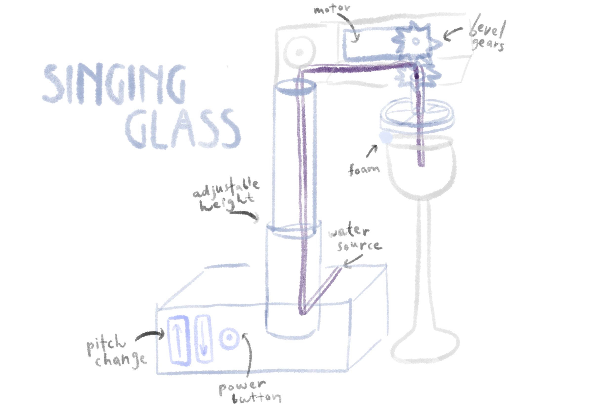
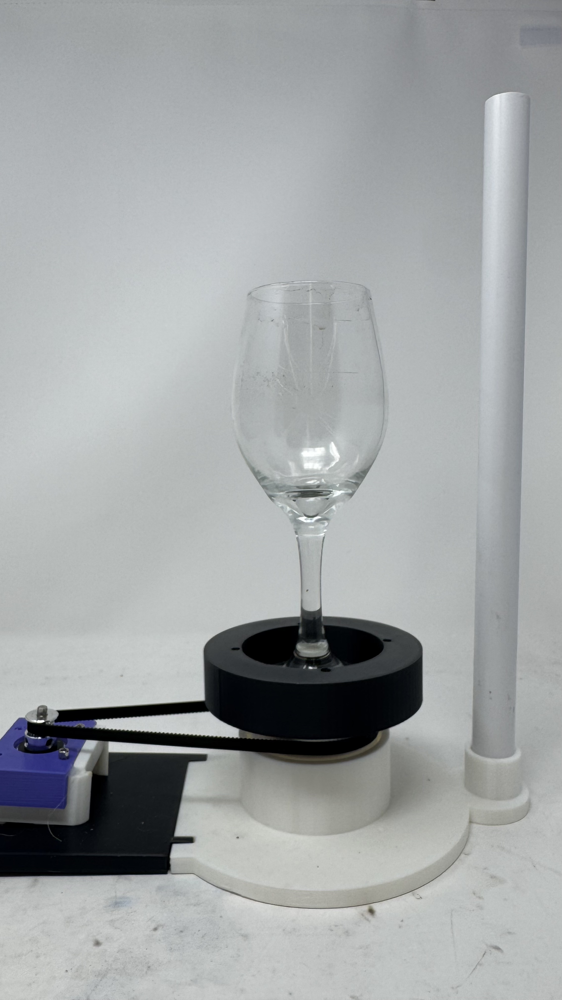
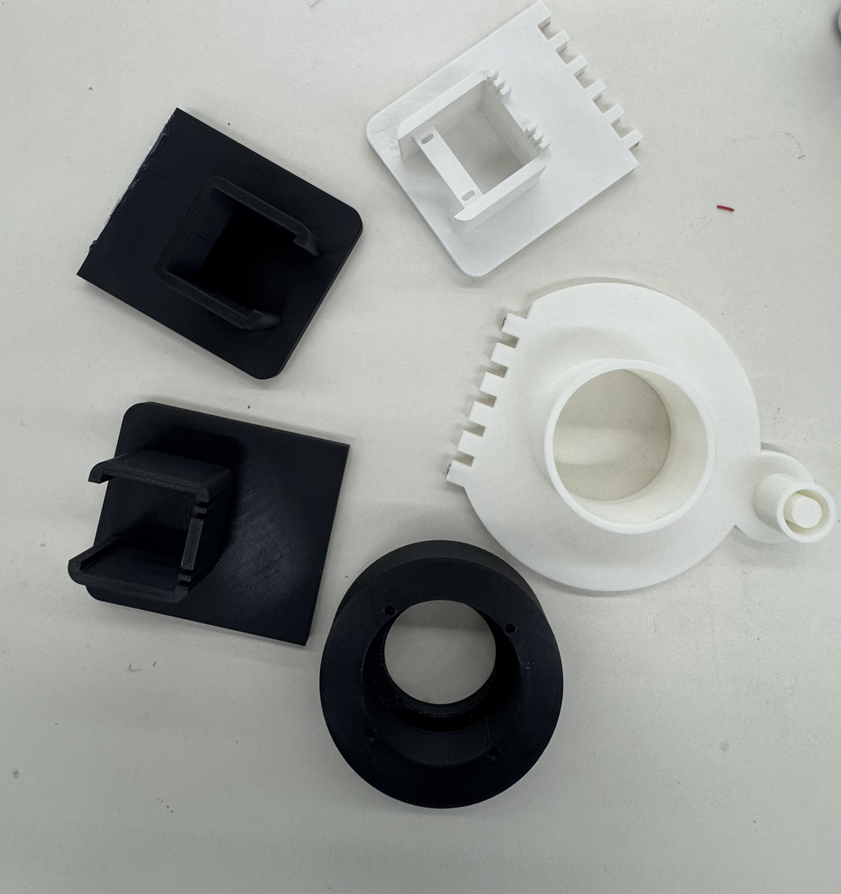
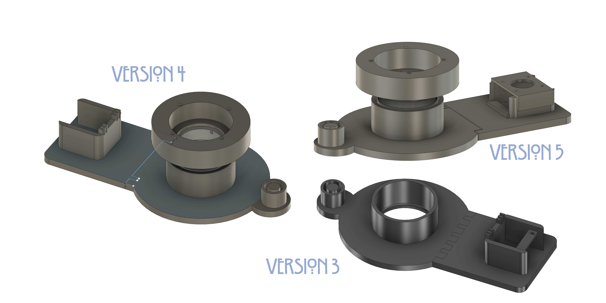
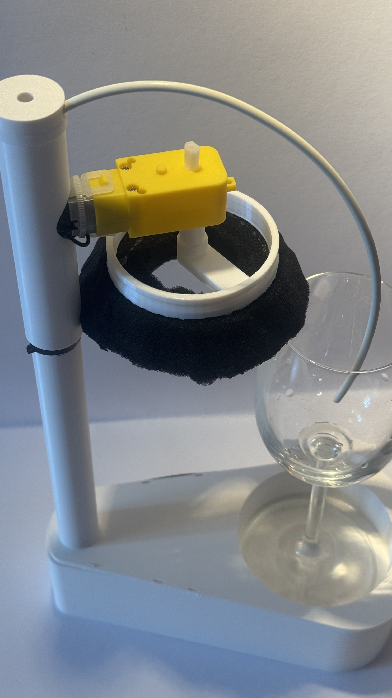
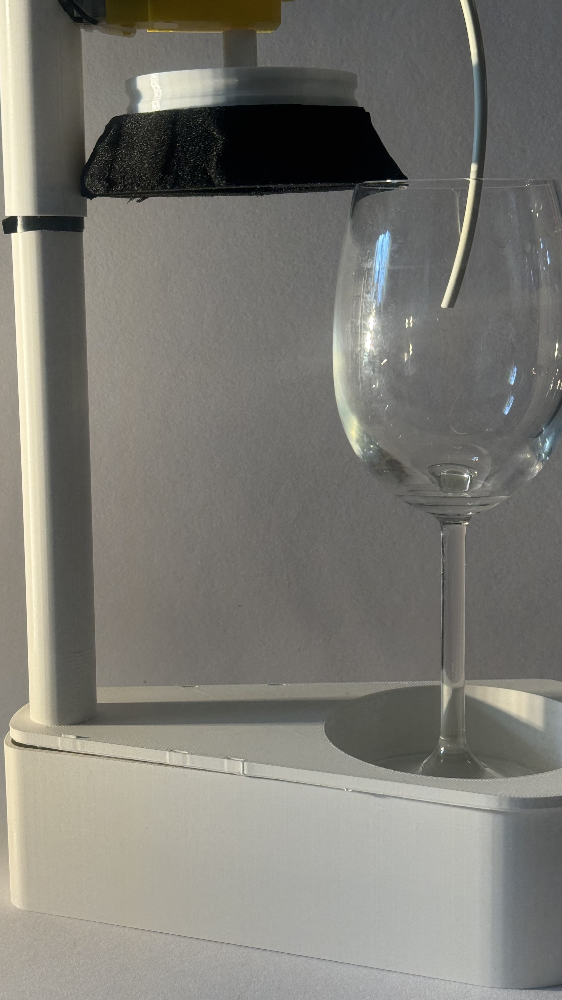
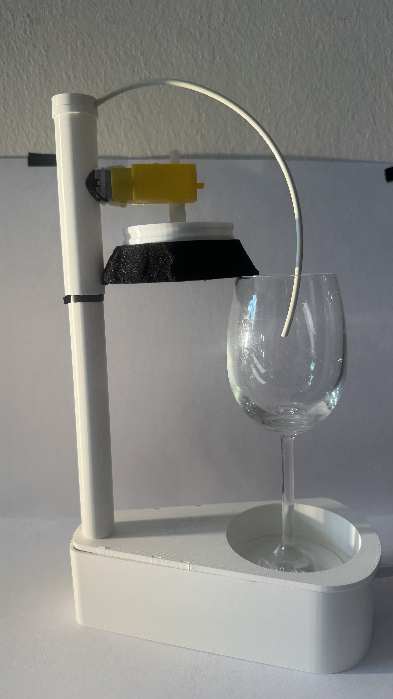
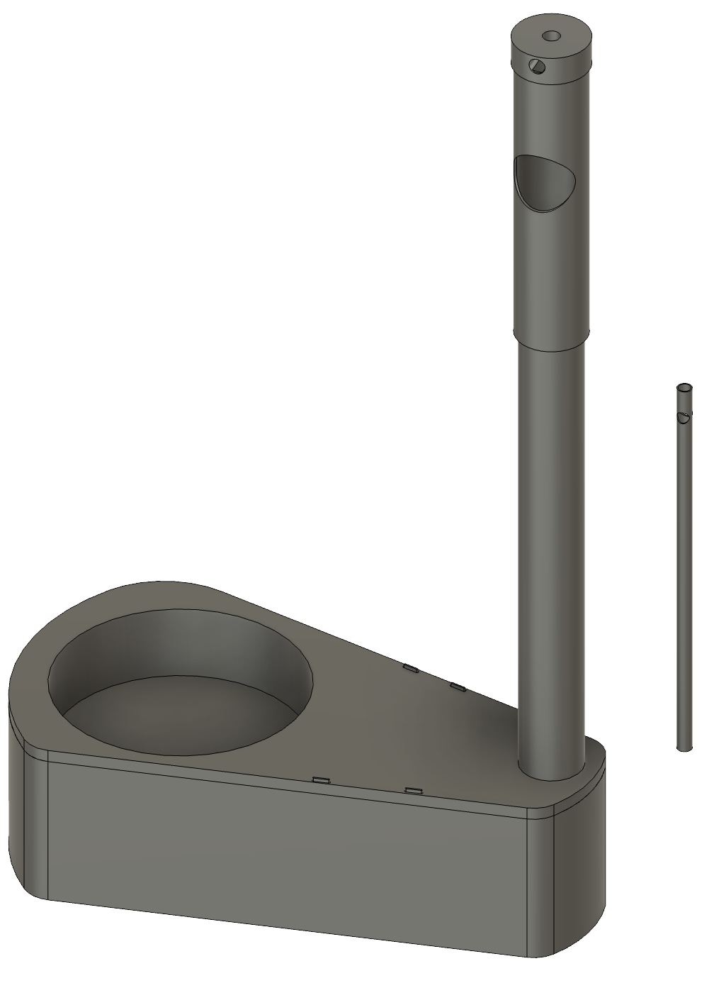

My final project is a machine that plays a wine glass, by spinning it against a stationary wet finger pad, it produces the same eerie, resonant tone you get when you run your finger around the rim of a glass. Think automated glass harmonica. The pitch can be modulated by how much water is in the glass, and I built a small web interface to help with that tuning. If you want to see where this idea started, have a look at Week 6.

My first design (the blueprint that started everything).
Attempt 1
I hated the way my MVP worked so much that I was willing to try anything, as long as it didn't involve something spinning in the air. I settled on a stepper motor connected via a timing belt to a holder for the wine glass. I'm genuinely proud of the timing belt design and the 3D-printed bearings (inspired by this video), but the whole thing had one tiny fatal flaw: it didn't work.
I had spent way too much time making sure everything fit together precisely, without stopping to check whether the pressure or the rotational speed would actually be enough to excite the glass. The glass itself wasn't ideal either. I only abandoned the approach the night before the PS70 faire, dusting off a prototype from much earlier. The wiring was standard stepper motor, the same setup we used in the drawing machine in Week 10.
The timing belt prototype in motion.

Version 1 fully assembled.

Iterations of 3D-printed parts.

Design versions side by side.
Attempt 2
I still wanted to finish this properly, unfortunately, the semester ended and I had to go home. It was a fun conversation explaining to the TSA agent why I was traveling with quite so many cables. I also severely overestimated how easy it would be to find a 3D printer in Prague. But thanks to my grandma (!!!), who asked one of her students, I got to print one final iteration (this kind of constraint makes you suddenly very meticulous, since every print decision matters).
The top section I'd designed to mount the ultrasonic sensor broke during printing, but everything else remained functional. I also built a small web tool (with some LLM help) to assist with pitch modulation, you can try it here. The wiring was completely standard: both motors go through a motor driver, and the ultrasonic sensor connects directly to pins on the Arduino.
At one point, this seemed impossible. I needed precision and stability, but they were incompatible: calibrating for accuracy destroyed stability, and prioritizing stability killed precision. A classic engineering catch-22. But! It works now. Kind of. Which is the best kind of working.




The final model.
Download 3D Files + Code